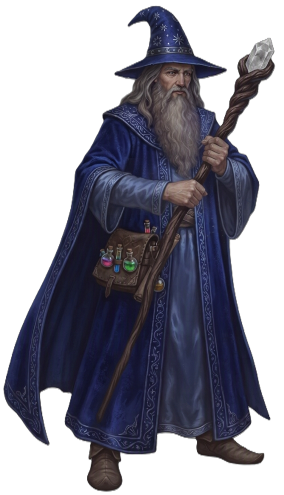

| Rolle | Vollzauberer · Arkaner Schadensverursacher · Kontrolle · Vielseitig |
| Zauberertyp | Vollzauberer Zauberslots bis Rang 9 |
| Primärer Schadensattribut | Intelligenz (INT) |
| Sekundärer Schadensattribut | — |
| Zauberattribut | Intelligenz (INT) |
| TP (L1) | 6 |
| TP pro Level | 4 |
| Rüstung | Keine |
| Waffen | Magierwaffen — Dolche, Stäbe, Zauberstäbe, Bücher |
| Rettungswürfe | Intelligenz (INT), Weisheit (WIS) |
| Attributsteigerung (Level) | 4, 8, 12, 16 |
| Fertigkeiten (2 zur Auswahl) | Arkana, Geschichte, Nachforschung, Religion, Logik, Wissen |
Der MAGIER ist der universelle Arkanzauberer — er beherrscht das breiteste Spektrum an Zaubern, von elementarer Zerstörung über Kontrolle bis zu Verwandlung und Zeitmagie. Intelligenz ist sein einziger Treiber: Zauber-Schaden, Zauber-Rettungswurf-SG und vorbereitete Zauber skalieren alle darüber. Er ist kein Nahkämpfer, kein Heiler, kein Verteidiger — er ist der vielseitige Zauberer der jede Situation löst. Meteor verwandelt Gruppen in Asche, Eisschacht betäubt Einzelziele, Versteinern versteinert auf Berührung, Urzeit bezaubert ganze Gruppen. Mit Vorzeichen (L2) sieht er die Zukunft voraus — zwei W20 die er als Ersatz für beliebige Würfe einsetzen kann. Arkanes Wiederherstellen (L1) gibt ihm Zauberslots zurück, Arkane Überladung (L14) maximiert Schadenswürfel. Er ist fragil, aber auf Distanz ist er die tödlichste Klasse auf dem Feld.
| Level | Fähigkeit | Beschreibung |
|---|---|---|
| L1 | Arkanes Wiederherstellen | 1/Lange Rast: Zauberslots zurückgewinnen (halbes Level an Slot-Levels). |
| L2 | Vorzeichen | 2 W20 würfeln nach langer Rast — als Ersatz für beliebige Angriffs-/Rettungswürfe einsetzbar. |
| L2 | Grimmige Ernte | Passiv: Heile Level+2 TP wenn du einen Gegner mit einem Zauber tötest. |
| L2 | Elementare Meisterschaft | Wähle ein Element. +2 Zauber-Rettungswurf-SG für dieses Element, skaliert mit Level (+2/+4/+6/+8/+10 bei L2/L5/L9/L13/L17). |
| L3 | Arkanes Wissen | Wähle 2 zusätzliche Zauber aus der Magier-Liste (bis Rang 2). |
| L5 | Arkane Analyse | Passiv: +2 Intelligenz. |
| L6 | Mächtiger Basiszauber | Passiv: Basiszauber-Schaden skaliert mit Level (zusätzlichlicher Würfel bei höheren Levels). |
| L10 | Zauber-Immunität | Passiv: Immun gegen Zauber-Unterbrechung für das gewählte Element. |
| L14 | Arkane Überladung | 1/Lange Rast: Maximiere die Schadenswürfel eines Zaubers (Rang 1–5). |
| L18 | Zaubermeisterschaft | 1/Lange Rast: 1 Zauber Rang 1–2 beliebig oft einsetzbar. |
| L20 | Signaturzauber | 2 Zauber Rang 3, je 1/Kurze Rast einsetzbar. |
Alle Zauber nutzen Zauberslots (Vollzauberer-Progression, Rang 1–9). Zauberattribut ist Intelligenz (INT). Upcast-Skalierung pro zusätzlichem Zauberslot bei Magischer Pfeil (+1W10), Donnerwelle (+1W8), Blitzstrahl (+1W8), Eisschacht (+1W6).
| Fähigkeit | Aktion | Nutzung | Level | Beschreibung |
|---|---|---|---|---|
| Magischer Pfeil | Aktion | Basiszauber — unbegrenzt | L1 | AETHER 1W10 Arkanschaden, Angriffswurf, Reichweite 24. Upcast mit Zauberslot: +1W10 pro Slot. |
| Fähigkeit | Aktion | Nutzung | Level | Beschreibung |
|---|---|---|---|---|
| Donnerwelle | Aktion | Zauberslot 1 | L1 | STURM Kegel 15ft: 2W8 Donner + KON-Rettungswurf oder 10ft Rückstoß. |
| Magierrüstung | Aktion | Zauberslot 1 | L1 | AETHER +3 RK für 8 Stunden. |
| Schild | Reaktion | Zauberslot 1 | L1 | AETHER +5 RK bis nächste Runde wenn angegriffen. |
| Schlaf | Aktion | Zauberslot 1 | L1 | AETHER Flächeneffekt 10ft: Alle Gegner müssen WIS-Rettungswurf ablegen oder werden kampfunfähig. |
| Flammenmensch | Aktion | Zauberslot 2 | L3 | FLAMME Resistenz gegen Feuer und Frost für 1 Minute. Erfordert Konzentration. |
| Blitzstrahl | Aktion | Zauberslot 3 | L5 | STURM 4W8 Blitz + GES-Rettungswurf (halber Schaden bei Erfolg), Reichweite 30. |
| Eisschacht | Aktion | Zauberslot 3 | L5 | FROST 6W6 Frost + KON-Rettungswurf oder betäubt (1 Runde), Reichweite 12. |
| Versteinern | Aktion | Zauberslot 4 | L7 | AETHER Berührung: KON-Rettungswurf oder versteinert. |
| Meteor | Aktion | Zauberslot 5 | L9 | FLAMME Flächeneffekt 20ft: 10W6 Feuer + 10W6 Wucht + GES-Rettungswurf (halber Schaden bei Erfolg). |
| Fähigkeit | Aktion | Nutzung | Level | Beschreibung |
|---|---|---|---|---|
| Zeitstopp | Aktion | 1/Lange Rast | L13 | AETHER +2 auf alle Rettungswürfe für 1 Minute. |
| Urzeit | Aktion | 1/Lange Rast | L17 | AETHER Alle Gegner in 30ft müssen WIS-Rettungswurf ablegen oder werden bezaubert (1 Minute). Erfordert Konzentration. |
| Ressource | Mechanik | Verfügbarkeit |
|---|---|---|
| Zauberslots | Vollzauberer-Progression (Rang 1–9). Zauberattribut: INT. | Alle Zauber, pro Zauberslot |
| Arkanes Wiederherstellen | Zauberslots zurückgewinnen (halbes Level an Slot-Levels) | 1/Lange Rast |
| Vorzeichen | 2 W20 nach langer Rast — als Ersatz für beliebige Würfe einsetzbar | 2/Lange Rast |
| Arkane Überladung | Maximiere Schadenswürfel eines Zaubers (Rang 1–5) | 1/Lange Rast, ab L14 |
| Signaturzauber | 2 Zauber Rang 3 beliebig oft | Je 1/Kurze Rast, ab L20 |